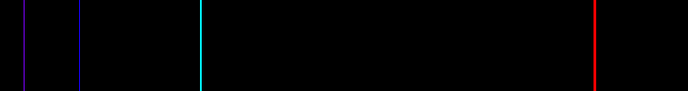
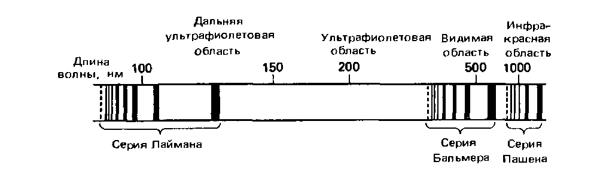
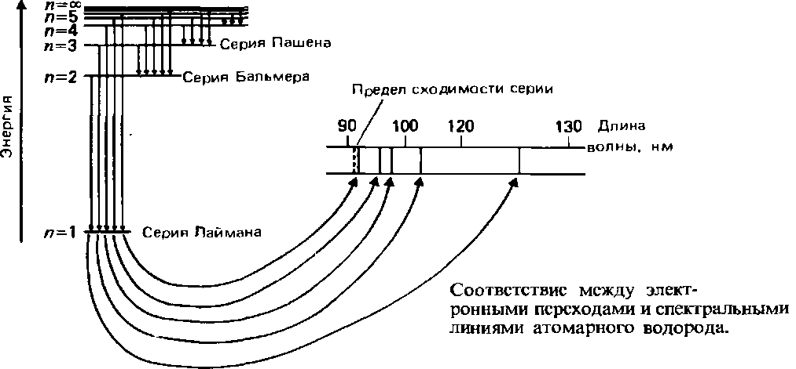
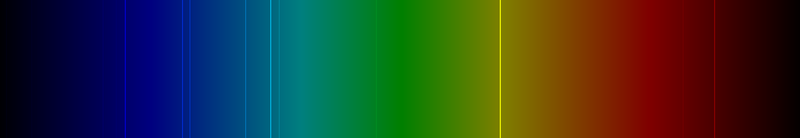
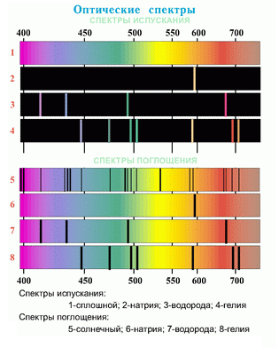

Почему электронные оболочки называются буквами s, p, d, f, g, h, i ? Что обозначают эти символы? Почему не a, b, c? Долго я не мог найти ответа на этот вопрос. А дело оказалось вот в чем.
Исторически первые четыре обозначения произошли от спектроскопических терминов, которые использовались в 1890-е годы при описании спектров щелочных металлов:
0 - s (sharp) - резкий,
1 - p (principal) - главный;
2 - d (diffuse) - диффузный;
3 - f (fundamental) - фундаментальный.
Как видно из этого ряда, известное заблуждение о том, что эти буквы являются сокращениями слов, описывающих форму орбитали, неверно. Описывается не форма орбитали (откуда бы ее узнали химики 1890 года), а вид линий на спектральной картине вещества.
Следующие энергетические уровни обозначаются g, h, i. Выяснить причину именно таких обозначений не удалось. Высказывались предположения, что такое обозначение было сделано по латинскому алфавиту после буквы f. И если бы существовал еще один уровень, он назывался бы j.
А вот как выглядят спектральные картины.
Эмиссионный спектр водорода H, он же атомный спектр испускания водорода:
Спектр водорода в контрастном варианте:

Как видно из этих снимков, атомный спектр испускания водорода представляет собой совокупность лини среди которых можно различить три группы линий, или серии:

На следующем рисунке условно показано соответствие между элекронными переходами и спектральными линиями атомарного водорода:

Теперь ясен ответ на вопрос, почему у водорода так много спектральных линий, а не одна (ведь электрон у атома водорода один). Потому что для этого одного электрона в атоме водороде много свободных энергетических состояний, в которых он может находиться. Все эти возможные состояния у массы атомов исследуемого вещества и видны на спектральных линиях.
Для сравнения спектры других веществ.
Эмиссионный спектр гелия (He):

Эмиссионный спектр натрия (Na):
